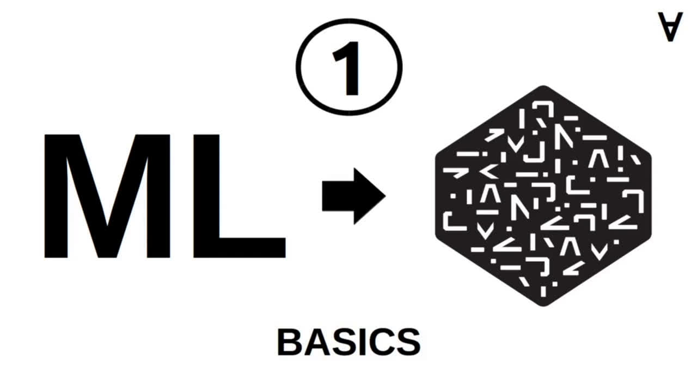
Numerai & ML - Part 1 - Basics
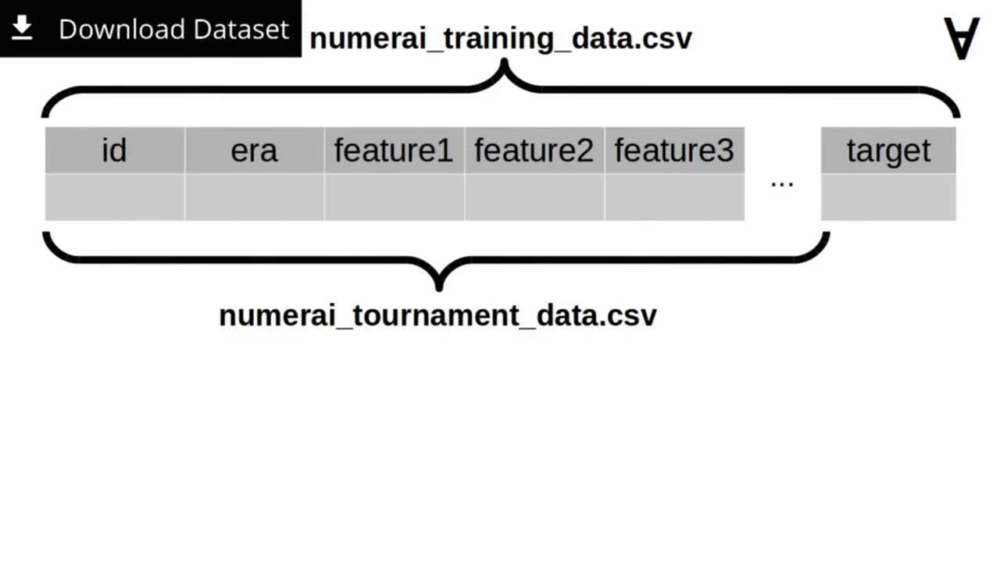
The weekly dataset downloaded from Numerai website contains two data files: numerai_training_data.csv (which contains records including ID, era, a set of features (currently 50) and the target value) and numerai_tournament_data.csv (contains the same fields except for the target which is supposed to be predicted by the data scientist).
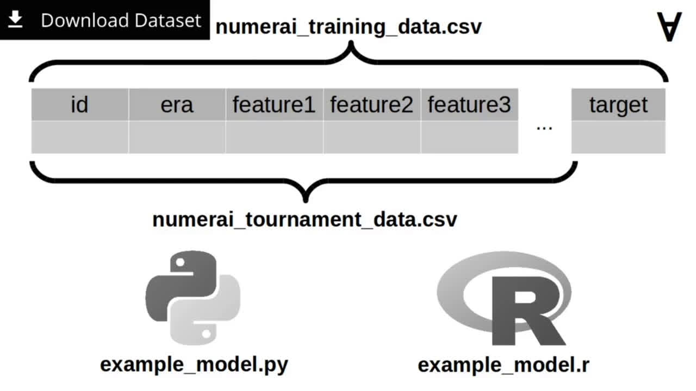
The dataset comes also with examples of a simple training and prediction code implemented in Python and R language. Let’s have a look at the Python code.
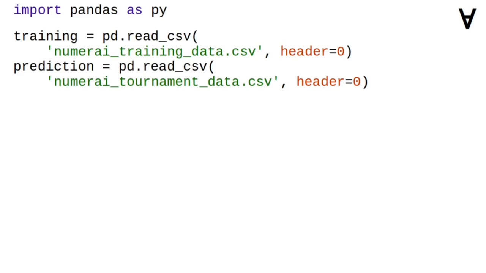
The pandas Python module is used to load the training and tournament data.
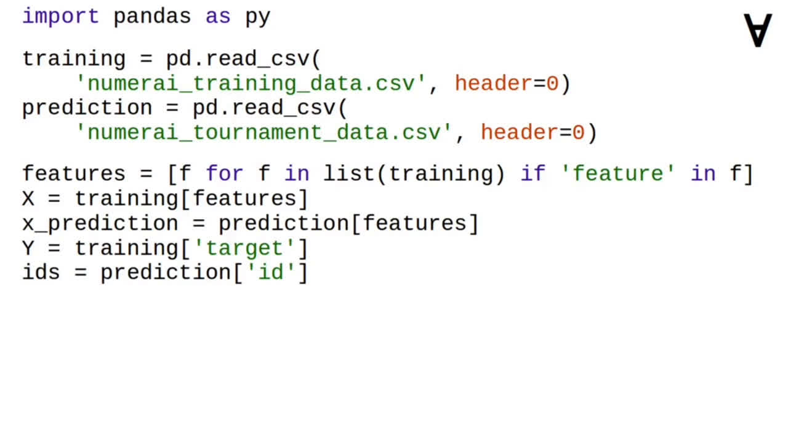
Then, a list of feature column names is used to extract the feature values from training and tournament data. Separately, the target column is extracted from training data and the record ID column is extracted from the tournament data.
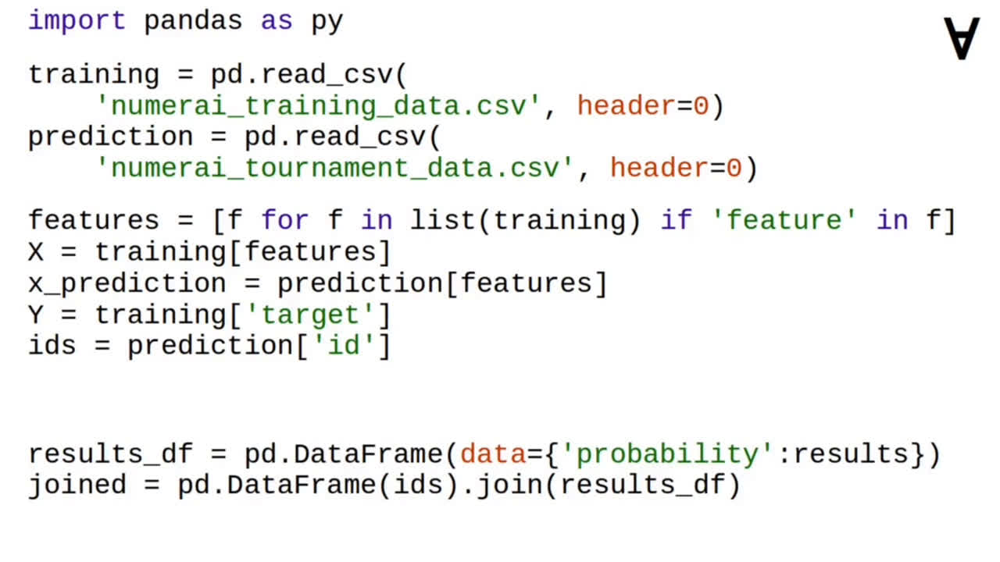
After the training and prediction is done the record ID from the tournament data is joined with the results of the prediction...
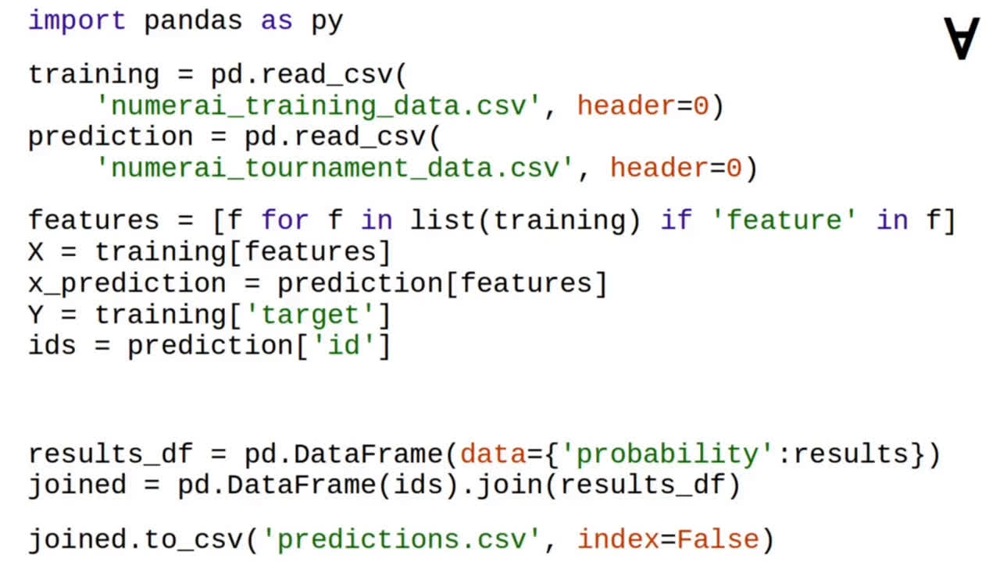
...and the joined data frame is written to predictions.csv file.
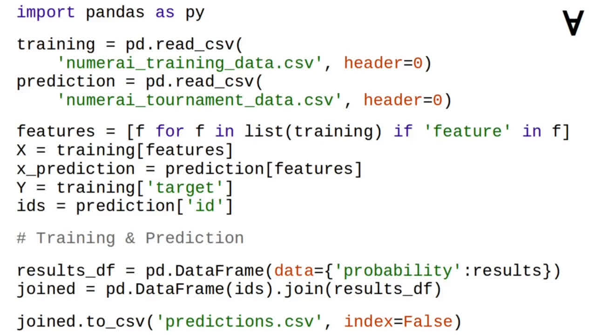
But how about the training and prediction?
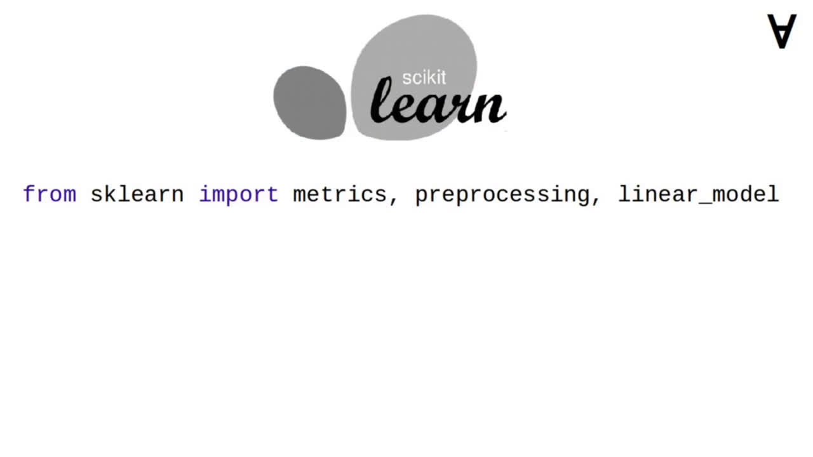
To accomplish that, scikit-learn module is used.
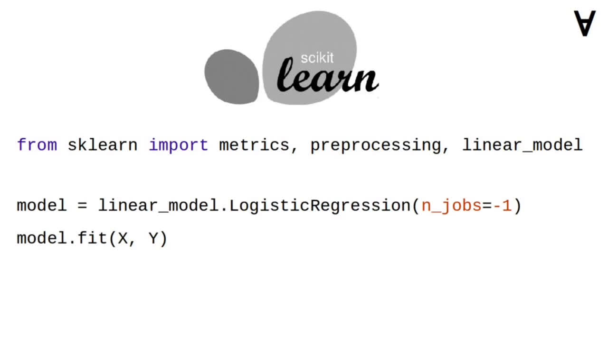
First, an untrained model is created - in this example it is logistic regression. Then, the model is trained using feature and target values extracted from the training data.
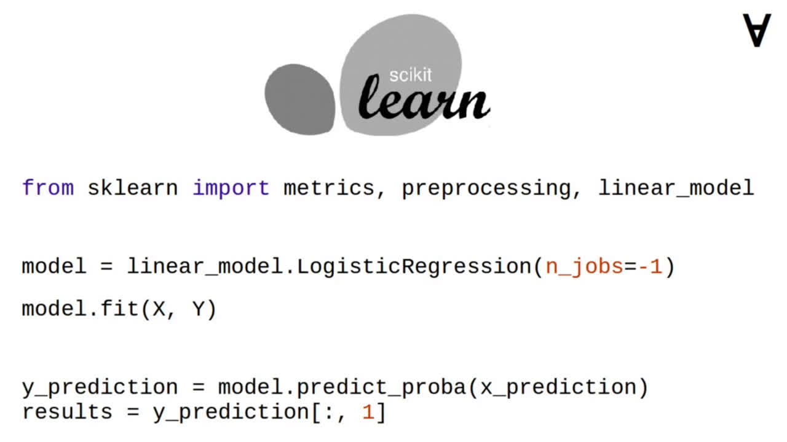
Finally, a prediction is made on the tournament feature values and only probability that the target is 1 is used (it is returned in column 1 by the prediction).
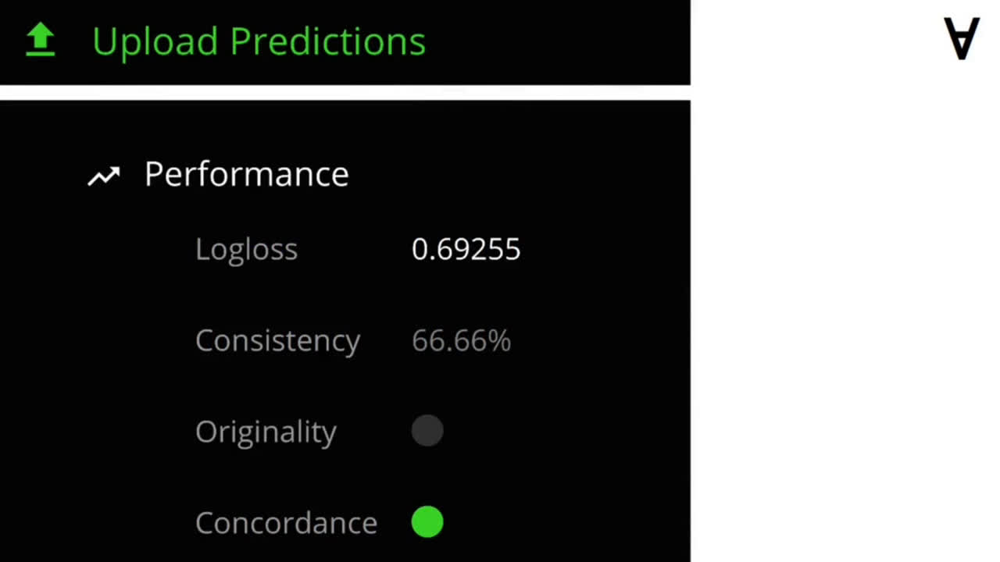
Now, let’s upload the predictions and check the performance of the model. After uploading, the website shows several values in return and to have your prediction considered they must meet entry criteria.
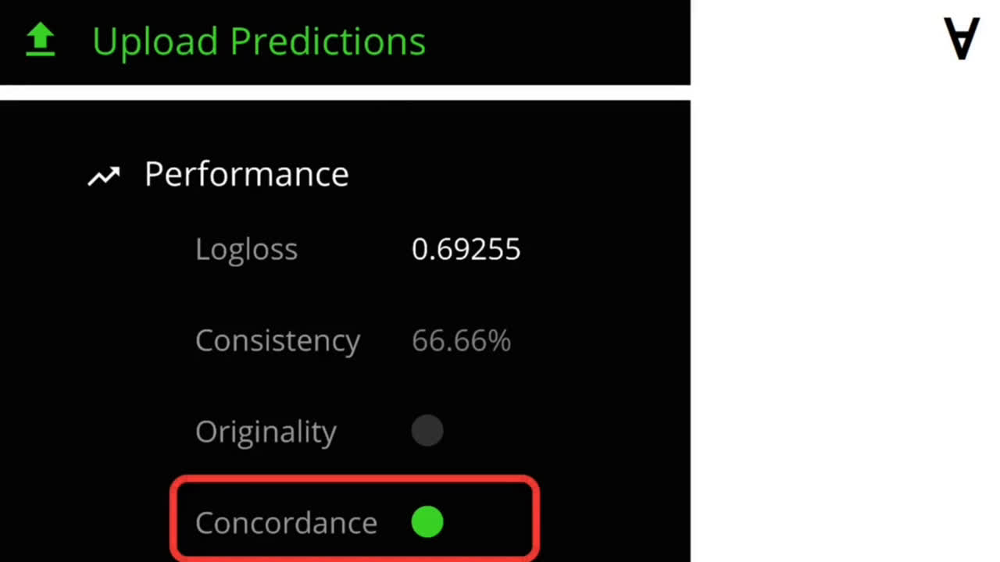
Starting from the bottom: Concordance is a measure of whether predictions on the validation set, test set, and live set appear to be generated by the same model (it is required to qualify for entry).
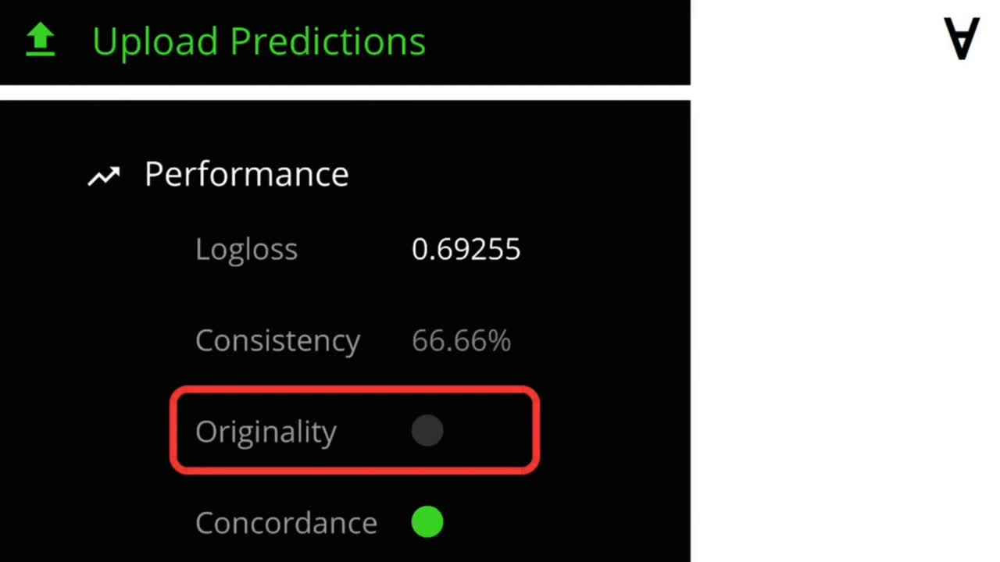
Originality is a measure of whether a set of predictions is uncorrelated with predictions already submitted by other data scientists (it is also required to qualify for entry).
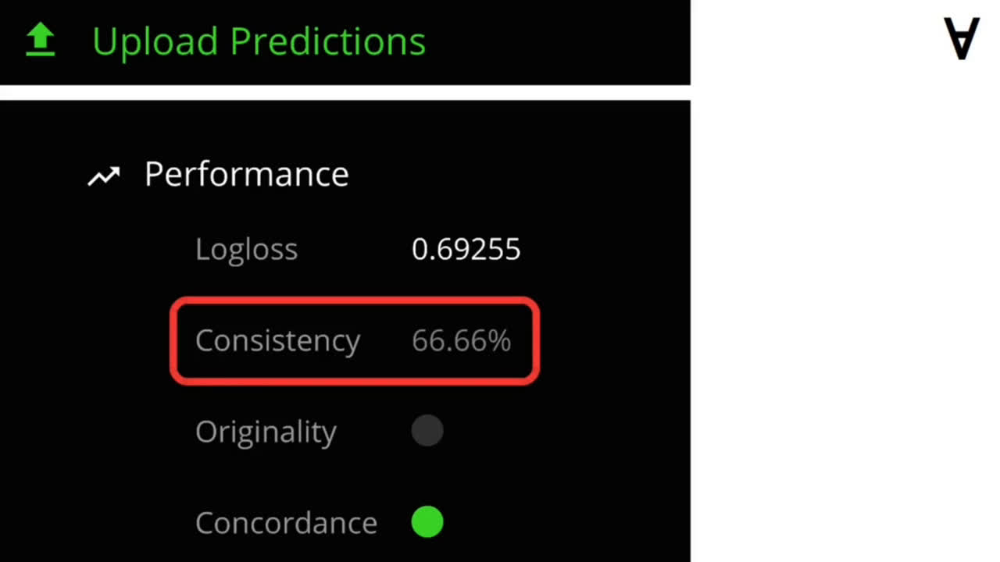
Consistency measures the percentage of eras in which a model achieves a log loss less than minus natural logarithm of 0.5 (this value is required to be above 75% to qualify for entry).
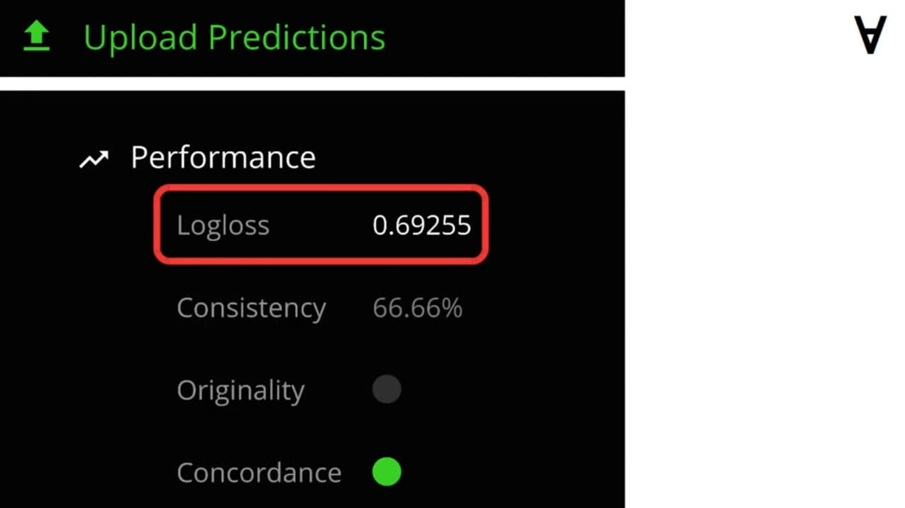
Finally, the log loss on validation set is also shown for the submission but it is not used for entry qualification it only serves as an indicator and actual pay-out will depend on the live performance log loss.
As you can see, this model only passes one out of three criteria. Well, there’s a lot of room to improve!